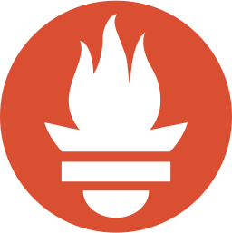

- Monitored security logs and supported alert triage in Microsoft Sentinel.
- Supported phishing simulation setup, execution and security-awareness metrics.
- Observed threat intelligence workflows, including IOC analysis and threat reporting.
- Shadowed web application penetration tests and learned how findings are reported.
Athens, Greece. B.Sc. Computer Science, expected 2027.
Dimitris Pournatzis
Cybersecurity student looking for a junior SOC, Blue Team or threat intelligence role.
At Alpha Bank, from March to May 2026, I monitored security logs and supported alert triage in Microsoft Sentinel. At home I run a hardened, monitored homelab on a Raspberry Pi 5.
Use the keys under the screen, the bar at the top, or 1 to 6 on your keyboard. The terminal takes commands too: try help.
Work experience
Two internships since 2023. The latest put me next to a bank's security monitoring, phishing and threat intelligence work.
Jun – Sep 2023
IT Intern
Zippo Hellas, Dritsas Group
Helped maintain the e-commerce site, fixed technical problems and kept the stock and pricing records in Excel.
Jun – Aug 2024
Prop Construction Assistant
House of David
Built stage props and solved fabrication problems as part of a team.
A private security homelab
A Raspberry Pi 5 running 12 services in Docker Compose, reachable only over Tailscale. No port is open to the internet.
- AccessNo public inbound ports. My devices connect over Tailscale (WireGuard), with HTTPS through Tailscale Serve.
- HardeningIsolated Docker networks, UFW subnet allowlists, fewer Linux capabilities and non-root containers where supported.
- MonitoringPrometheus, Grafana, Loki with Promtail and Alertmanager keep metrics, logs and alerts in one place.
- TestingI test the controls with Nmap, Hydra and Wireshark, and write up incidents with their root cause and fix.
Technical skills
Tools and methods I have used at work or in my homelab, grouped by area.
Security operations
- Microsoft Sentinel (SIEM)
- Log monitoring
- Alert triage
- Phishing simulation support
Threat intelligence
- IOC analysis workflows
- Threat reporting
Seen first-hand during my internship.
Host and network security
 Linux
Linux- UFW
- CrowdSec
- Fail2ban
- Tailscale (WireGuard)
- TLS
- Pi-hole
- Unbound
Monitoring and alerting

Prometheus- Grafana
- Loki
- Promtail
- Alertmanager
Security testing
- Nmap
- Wireshark
- Hydra
- Kali Linux
Used against my own homelab.
Infrastructure
 Docker Compose
Docker Compose- Isolated bridge networks
- Least-privilege containers
 Git
Git- Automated off-site backups
Education and certifications
2022 – expected 2027
B.Sc. Computer Science, cybersecurity path
Athens University of Economics and Business
Certifications and training
- OffSecThreat Hunting Foundations badge
- OffSecSecurity Essentials (SEC100), learning path completed
- OffSecFoundational Threat Hunting (TH-200), learning path completed
- CadmusCyber Regulatory Compliance & Policy Management
Languages
- EnglishCambridge English C2 Proficiency (CPE)
- JapaneseJLPT N5
Activities
- ISC2Student Member
- InfocomAttended the 16th Infocom Security Conference
Contact
I'm in Athens, Greece, looking for a junior SOC Analyst, Blue Team or Threat Intelligence role. Email is the best way to reach me.